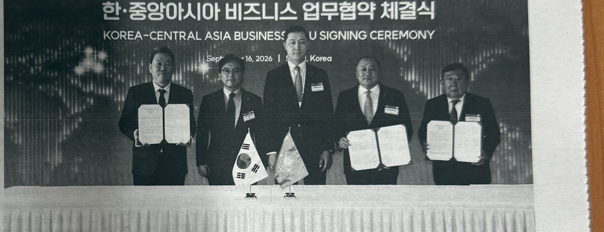
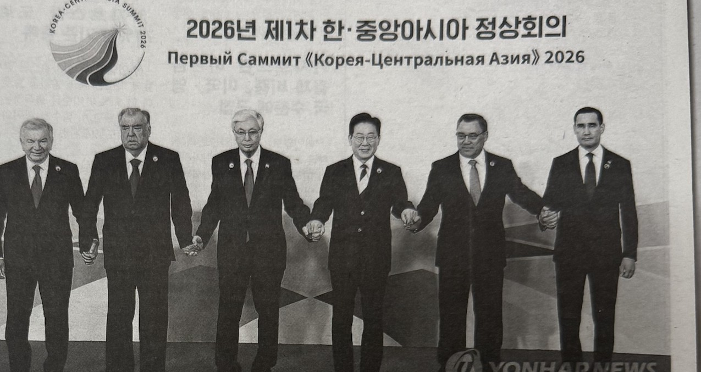
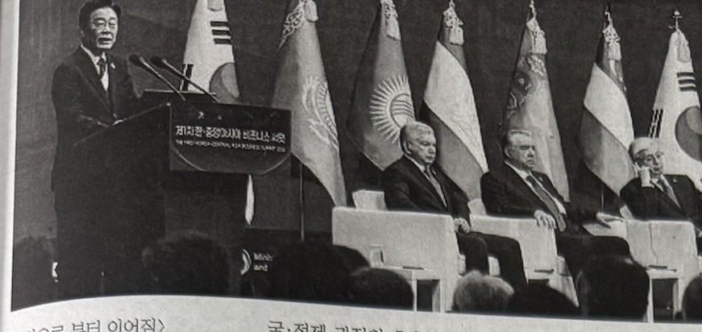
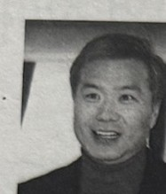
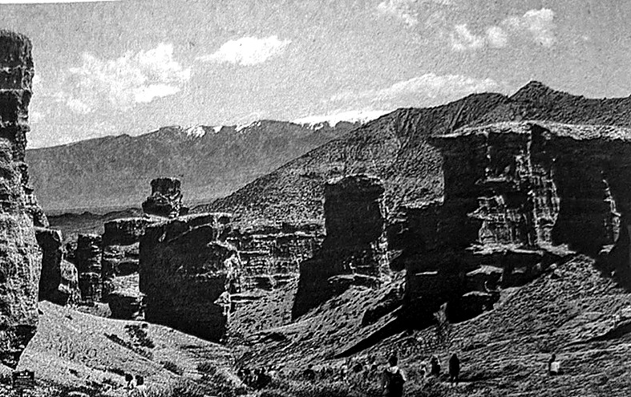
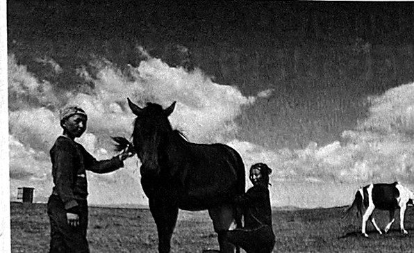

Since 1999 · 창간 27주년한인일보Ханин Ильбо · Еженедельная рекламно-информационная газета
№ 37(753) · 24 сентября 2026 года
발행인 김상욱 · 주필 김상욱(알마티 고려문화원장)
한국기자협회·재외동포언론인협회 회원사
기사제공 KBS · 연합뉴스 · 고려일보
haninnews.info · facebook.com/almatykim1
1면 · 경제
현대차그룹, 카자흐스탄 최대 신도시 개발사업 참여
알라타우 시티 프로젝트 협약 모빌리티·에너지·디지털 협력 검토
현대차그룹, 카스피안 그룹·유나이티드 그룹 알라타우와 업무협약 체결 — 피지컬 AI 기반 미래도시 사업 모색

현대차그룹, 카자흐스탄 기업과 알라타우 시티 사업 추진 협약 체결 [현대차그룹 제공] · 한·중앙아시아 비즈니스 업무협약 체결식(2026.9.16, 서울)
(서울=연합뉴스) 김윤구 기자 · ykim@yna.co.kr
현대차그룹이 카자흐스탄 최대 규모 신도시 개발사업에 참여해 피지컬 인공지능(AI) 기반 미래도시 사업을 모색한다.
현대차그룹은 지난 16일 제1차 한·중앙아시아 비즈니스 서밋에서 카자흐스탄 민간 투자기업 카스피안 그룹, 금융·투자기업 유나이티드 그룹 알라타우와 시티 프로젝트 추진을 위한 협약을 체결했다고 17일 밝혔다.
협약식에는 서강현 현대차그룹 기획조정담당 사장, 최유리 카스피안 그룹 회장, 비야체슬라프 킴 유나이티드 그룹 알라타우 회장 등이 참석했다.
알라타우 시티 프로젝트는 카자흐스탄 최대 도시 알마티 북쪽에 880㎢ 규모의 신도시를 조성하는 사업이다. 카자흐스탄 대통령령에 따라 국가 프로젝트로 지정된 특별경제구역이다.
카스피안 그룹이 도시 개발과 현지 사업 실행을 주도하고 유나이티드 그룹 알라타우가 금융·디지털 생태계를 결합하는 방식으로 추진된다.
현대차그룹은 이번 협약을 통해 카자흐스탄을 중앙아시아 피지컬 AI 기반 미래도시 사업의 거점으로 확보하고, 현지 기업과 스마트시티 사업화 가능성을 검증할 계획이다.
특히 알라타우 시티와 알마티를 연결하는 핵심 지역인 게이트 구역을 중심으로 도시 개발·운영 관련 사업 기회를 우선 검토한다.
모빌리티와 에너지, 디지털 분야의 협력 가능성을 살펴보고 타당성 조사를 거쳐 구체적인 사업 범위와 참여 방안을 정할 예정이다.
▶ 관련기사 '서울선언 이후, 왜 카자흐스탄인가?' — 특집으로 이어집니다
특집 · 한-중앙아시아 정상회의 돌아보기
서울선언 이후, 왜 카자흐스탄인가?
한·중앙아 협력의 '실행 무대'로 떠오른 카자흐스탄핵심광물·에너지·중간회랑·AI···한국의 미래 공급망과 유라시아 전략이 만나는 곳

2026년 제1차 한·중앙아시아 정상회의 — 카자흐스탄·타지키스탄·우즈베키스탄·한국·투르크메니스탄·키르기스스탄 정상이 함께했다. [연합뉴스]
한국과 중앙아시아 5개국이 정상회의를 정례화하고 핵심광물, 에너지, AI·첨단기술, 물류, 환경, 문화 등 전방위 협력을 추진하기로 하면서 중앙아시아를 바라보는 한국의 시각에도 변화가 예상된다.
특히 2028년 제2차 한·중앙아시아 정상회의 개최지가 카자흐스탄으로 결정되면서 카자흐스탄의 전략적 의미가 더욱 커지고 있다.
이번 '서울선언'을 카자흐스탄의 관점에서 바라보면 단순히 정상회의 개최국 하나가 추가된 것이 아니다. 서울에서 제시된 협력의 상당 부분을 실제 사업으로 연결할 수 있는 국가가 카자흐스탄이라는 점에 주목할 필요가 있다.
카자흐스탄은 중앙아시아에서 가장 넓은 국토와 풍부한 천연자원을 보유하고 있을 뿐 아니라 중국과 러시아, 카스피해를 거쳐 유럽으로 연결되는 지리적 위치를 갖고 있다. 여기에 핵심광물, 에너지, 물류, 산업, 디지털 전환 등 다양한 분야에서 협력 기반을 갖추고 있다.
따라서 서울선언 이후 한·카자흐스탄 관계는 기존의 자원 협력을 넘어 '유라시아 공급망과 연결성(connectivity)을 함께 만들어가는 전략적 파트너십'으로 발전할 가능성이 있다.
자원국에서 '가치사슬 파트너'로
서울선언에서 가장 눈에 띄는 경제협력 분야 가운데 하나는 핵심광물이다. 세계 경제가 공급망 재편과 자원 안보 경쟁에 들어가면서 핵심광물의 안정적 확보는 반도체와 배터리, 전기차, 방산, 첨단 제조업의 경쟁력과 직결되고 있다.
카자흐스탄은 우라늄을 비롯한 다양한 광물자원을 보유하고 있으며, 희소금속과 핵심광물 분야에서도 개발 잠재력이 거론되는 국가다. 그러나 앞으로의 한·카자흐스탄 협력은 단순히 광물을 한국으로 가져오는 방식에 머물러서는 안 된다.
서울선언이 제시한 '탐사→채굴→정제→가공→제조'로 이어지는 가치사슬 구축은 바로 이 지점을 겨냥한다. 한국은 기술과 자본, 제조 역량을 제공하고 카자흐스탄은 자원과 현지 생산 기반, 시장을 제공하는 방식이다.
이렇게 되면 카자흐스탄은 한국의 단순한 자원 공급국이 아니라 핵심광물 공급망을 함께 구축하는 산업 파트너로 성격이 달라진다. 자원 채굴에 의존하는 경제 구조에서 벗어나 정제와 가공, 제조업으로 산업의 부가가치를 확대할 수 있기 때문이다.
두 번째 축은 에너지다
카자흐스탄은 중앙아시아의 대표적인 에너지 생산국이다. 석유와 천연가스 등 전통적인 에너지 자원뿐 아니라 우라늄 생산에서도 국제적인 비중을 갖고 있다. 한국으로서는 안정적인 에너지와 자원 공급망을 다변화할 수 있는 협력 대상이다.
동시에 카자흐스탄이 추진하는 에너지 전환 과정에서 한국의 기술과 기업이 참여할 공간도 커질 수 있다. 서울선언이 청정에너지, 에너지 효율, 전력망 등을 협력 분야로 제시한 것도 이러한 변화와 연결된다. 즉, 한·카자흐스탄 에너지 협력은 과거의 '석유와 가스' 중심에서 미래의 '에너지 전환'까지 범위를 넓히는 단계로 나아갈 가능성이 있다.
카자흐스탄의 또 다른 가치, '길'이다
카자흐스탄을 단순한 자원국으로만 바라봐서는 안 되는 이유가 여기에 있다. 카자흐스탄의 진정한 전략적 가치는 자원뿐 아니라 지리적 위치에도 있다. 중국에서 출발한 물류가 중앙아시아를 지나 카스피해로 이동하고, 다시 코카서스와 유럽으로 연결되는 이른바 중간회랑은 유라시아 교통·물류망 재편 과정에서 주목받고 있다. 카자흐스탄은 이 노선에서 광대한 영토와 철도·도로망을 가진 핵심 통과국이다.
한국은 세계적인 제조업 강국이지만 유라시아 대륙과의 물리적 연결에서는 상대적으로 불리한 위치에 있다. 반면 카자흐스탄은 중국과 유럽 사이에 자리하면서 중앙아시아를 넘어 카스피해와 코카서스, 유럽으로 연결되는 관문 역할을 할 수 있다. 따라서 한국 기업이 카자흐스탄을 생산·물류 거점으로 활용할 경우 단순히 중앙아시아 시장에 진출하는 것을 넘어 유라시아 시장으로 연결되는 새로운 경로를 확보할 가능성이 있다.

서울에서 열린 제1차 한·중앙아시아 정상회의 연설 장면. [연합뉴스]
AI와 첨단산업에서 새로운 기회
서울선언은 전통적인 자원·인프라 협력에 머물지 않고 AI와 디지털 전환, 과학기술, 연구개발, 인재 양성까지 협력 분야를 확대했다. 카자흐스탄은 중앙아시아의 경제 중심국으로서 디지털 경제와 산업 현대화를 추진하고 있다. 한국의 ICT와 AI, 스마트시티, 제조 자동화 등 기술과 결합할 경우 새로운 산업협력 모델을 만들 수 있다.
예를 들어 광물 탐사 과정에 AI와 디지털 기술을 적용하고, 채굴·정제 과정의 효율성을 높이며, 물류 과정까지 디지털화한다면 자원산업 자체가 첨단산업으로 전환될 수 있다.
환경·물 문제도 새로운 협력 분야
카자흐스탄을 비롯한 중앙아시아가 직면한 물 부족과 사막화, 대기오염, 기후변화 문제 역시 한국과의 협력을 필요로 하는 분야이다. 서울선언에는 식수와 폐기물 관리, 대기질 개선, 생물다양성, 사막화 방지, 생태 복원 등이 협력 분야로 포함됐다. 한국이 축적한 수자원 관리와 환경기술, 도시 인프라 관리 경험을 중앙아시아의 환경 문제 해결과 연결할 수 있기 때문이다.
'사람의 연결'에서는 고려인이 있다
서울선언에서 경제협력 못지않게 주목해야 할 부분이 교육·문화·관광·청년교류 등 사람을 중심으로 한 협력이다. 한국과 중앙아시아의 관계에는 다른 지역과 차별화되는 역사적 연결고리가 있다. 바로 고려인이다. 2027년은 고려인들이 중앙아시아에 정착한 지 90년이 되는 해다.
1937년 극동지역에서 중앙아시아로 강제이주된 고려인들은 카자흐스탄과 우즈베키스탄을 비롯한 중앙아시아 각지에서 새로운 삶의 터전을 만들었다. 그 과정에서 고려인들은 한국과 중앙아시아를 잇는 역사적 가교 역할을 해왔다. 경제적 이해관계만으로 만들어지는 협력은 국제환경 변화에 따라 흔들릴 수 있지만, 역사와 문화, 사람을 통한 연결은 장기적인 관계의 기반이 될 수 있다.
2028년 카자흐스탄 정상회의가 중요한 이유
2028년 카자흐스탄에서 열리는 제2차 한·중앙아시아 정상회의는 단순한 차기 회의가 아니다. 서울에서 선언된 협력 방향이 실제 사업으로 얼마나 구체화됐는지를 확인하는 자리가 될 수 있다. 핵심광물 공동개발과 정제·가공, 에너지 협력, 제조업 투자, AI·디지털 프로젝트, 중간회랑 물류사업, 환경·수자원 협력, 고려인 90주년 관련 문화사업 등이 어떤 형태로 발전하느냐가 중요하다.
자원은 있지만 기술이 필요한 나라와 기술은 있지만 자원과 대륙적 연결성이 필요한 나라 — 한국과 카자흐스탄의 협력 가능성을 압축하면 이렇게 표현할 수도 있다.
'유라시아의 심장'에서 '협력의 플랫폼'으로
카자흐스탄의 전략적 의미는 과거처럼 '석유가 많이 나는 중앙아시아 국가'라는 한 문장으로 설명하기 어려워지고 있다. 핵심광물과 에너지 공급망의 관점에서는 자원 파트너이고, 제조업의 관점에서는 산업협력 파트너다. 중간회랑의 관점에서는 유라시아 물류 거점이며, AI와 디지털 전환의 관점에서는 새로운 기술 협력 상대다. 여기에 고려인이라는 역사·문화적 연결고리까지 갖고 있다.
결국 앞으로의 한·카자흐스탄 관계에서 중요한 질문은 '카자흐스탄에서 무엇을 가져올 것인가'가 아니다. '한국과 카자흐스탄이 무엇을 함께 만들어 유라시아로 연결할 것인가'가 핵심이 될 것이다. 서울에서 선언된 협력이 카자흐스탄에서 실제 사업과 연결될 때, 카자흐스탄은 한국에게 단순한 중앙아시아의 한 국가를 넘어 유라시아 협력의 플랫폼이자 전략적 파트너로서 새로운 의미를 갖게 될 수 있다.
— 김상욱 본지 주필
오피니언 · 카자흐스탄 독립 35주년 기념 특별기획 — 카자흐스탄의 근현대사 37
카자흐스탄의 매력

김상욱
알마티 고려문화원장 · 본지 주필
카자흐스탄을 향한 시선이 최근 들어 빠르게 달라지고 있다. 한때는 낯설고 먼 중앙아시아의 나라로만 인식되던 이 나라가 이제는 자연과 문화, 역사와 체험이 결합된 새로운 여행지로 주목받고 있다.
대자연 속에서 트레킹을 즐기려는 여행자들, 실크로드의 흔적을 따라 문화 탐방을 떠나는 이들, 그리고 항일 독립운동과 고려인 디아스포라의 역사를 찾아오는 방문객들까지, 여행의 목적은 다양해지고 그 흐름은 점점 뚜렷해지고 있다.
이러한 변화 속에서 카자흐스탄 정부 역시 관광산업을 국가 성장전략의 중요한 축으로 인식하기 시작했다. 최근 열린 관광진흥회의에서 총리는 외국인 관광객 유치를 가로막는 구조적 문제들을 강하게 지적했다. 일부 택시기사의 바가지요금, 정비되지 않은 관광지 도로 인프라, 관광업 종사자들의 서비스 의식 부족이 대표적인 문제로 언급되었다.
그러나 이러한 지적과는 별개로 카자흐스탄의 관광 환경은 과거와 비교할 수 없을 정도로 빠르게 발전되어 왔다. 도로와 공항, 숙박시설 등 기본적인 인프라는 눈에 띄게 쾌적해졌고 서비스 수준 역시 점차 국제적 기준에 가까워지고 있다. 특히 여행자들이 가장 불편함을 느끼던 화장실 문제 역시 상당 부분 개선되었다.

알마티를 중심으로 반경 200킬로미터 안에 전혀 다른 성격의 자연이 공존한다는 점이야말로 카자흐스탄 관광의 핵심이다. 차른 캐년과 침블락의 설경·협곡·침엽수림이 어우러진 장관을 마주하게 된다.
카자흐스탄이 왜 여행지로서 그렇게 매력적인지 생각해 보면 첫 번째 답은 '위치'에 있다. 카자흐스탄은 유라시아 대륙의 한가운데에 위치한다. 동쪽으로는 중국, 서쪽으로는 유럽과 연결되고, 남쪽으로는 중앙아시아와 중동, 북쪽으로는 러시아와 이어지는 이 지리적 위치는 지도상으로 볼 때 문명과 문명이 교차하는 공간을 의미한다.
인천에서 약 6시간이면 도착할 수 있는 이 나라는 물리적으로도 심리적으로도 생각보다 훨씬 가까운 곳에 있다. 이러한 접근성은 여행의 문턱을 낮추는 결정적인 요소이다. 특히 동서양의 문화가 자연스럽게 융합된 도시 알마티는 중앙아시아 여행의 관문이자 핵심 거점 역할을 하고 있다. '숲 속에 자리 잡은 도시'라는 별칭 그대로, 알마티는 도시와 자연이 공존하는 독특한 풍경을 우리 앞에 펼쳐 보인다.
알마티의 매력은 도시 자체에만 머물지 않는다. 이 도시를 중심으로 반경 200킬로미터 안에 전혀 다른 성격의 자연이 공존한다는 점이야말로 카자흐스탄 관광의 핵심이다. 실제로 침블락은 스키 리조트로도 유명하여 늦은 봄까지 스키를 즐길 수 있는 몇 안 되는 장소 중 하나이다.
한여름에도 만년설이 녹지 않는 천산산맥의 웅장한 풍경이 도시 바로 뒤편에 펼쳐지고, 한 시간 만에 곤돌라를 타고 3,000미터 이상의 고지로 올라가면 침블락의 설경과 협곡, 그리고 침엽수림이 어우러진 장관을 마주하게 된다. 이 풍경은 종종 유럽의 알프스와 비교되지만 보다 원시적이고 거대한 자연의 느낌을 간직하고 있다는 점에서 또 다른 감동을 준다.
눈 덮인 산맥과는 정반대의 풍경, 끝없이 이어지는 사막과 초원이 나타난다. 알틴에밀 국립공원은 이러한 극적인 대비를 가장 잘 보여 주는 곳이다. 이곳에는 바람이 불면 소리를 내는 '노래하는 사막', 흰색이 층을 이루는 '아크타우 산', 검은 화산암 지형의 '카트타우 산' 등 독특한 자연경관이 펼쳐진다.
여기에 더해 중앙아시아의 그랜드 캐니언이라 불리는 차른 캐년, 첩첩이 겹친 산맥 깊숙한 곳에 자리 잡은 쿨사이 호수까지, 이 지역은 그 자체로 하나의 자연 박물관과 같다. 이처럼 한 도시를 중심으로 만년설, 협곡, 사막, 초원을 모두 경험할 수 있는 곳은 세계적으로도 드물다. 캐나다 로키의 장엄함과 사하라 사막의 광활함, 몽골 초원의 여유로움을 한 여행에서 동시에 경험할 수 있다는 점에서 카자흐스탄은 여행지로서 독특한 위치를 차지한다.

초원을 여행하다 보면 유르타를 치고 살아가는 유목민들을 만날 수 있는데, 이들은 낯선 방문객에게도 따뜻한 차와 빵, 고기를 권하며 자연스럽게 자리를 내어준다.
두 번째 매력은 사람이다. 카자흐인들의 환대 문화는 그냥 친절이 아니라 하나의 생활 방식에 가깝다. 오랜 유목 생활 속에서 형성된 이 문화는 낯선 이를 손님으로 받아들이고, 음식과 차를 나누며 관계를 맺는 전통으로 이어져 왔다. 유르타에서 하룻밤을 보내며 별이 가득한 초원의 밤하늘을 바라보고 말을 타고 끝없이 펼쳐진 평원을 달리는 경험은 현대인의 일상에서는 쉽게 접할 수 없는 특별한 기억으로 남는다.
세 번째 매력은 '여백'이다. 카자흐스탄은 넓다. 그 광활함은 면적의 문제가 아니라 사람과 자연 사이의 거리에서 오는 여유를 의미한다. 관광객으로 붐비는 공간이 아니라 스스로 자연 속에 들어가 그 공간을 느낄 수 있는 여행, 이것이 이 나라가 주는 또 하나의 가치이다.
마지막으로, 이 모든 요소를 가능하게 하는 것은 바로 '선택과 집중이 가능한 여행 구조'이다. 관광 자원이 한곳에 몰려 있지 않고 광활한 국토에 흩어져 있기 때문에 여행자는 자신의 관심과 깊이 있게 경험할 수 있는 코스를 선택할 수 있다. 이는 대량 관광이 아닌 개별적이고 체험 중심의 여행을 선호하는 최근 트렌드와도 맞아떨어진다.
이처럼 카자흐스탄의 매력은 하나로 정의될 수 없다. 유라시아의 중심이라는 지리적 위치, 압도적인 자연의 다양성, 유목 문화에서 비롯된 환대, 광활한 공간이 주는 자유로움이 서로 복합적으로 어우러진 경험이다. 이 나라는 아직 완성된 관광대국은 아니다. 그러나 분명한 방향성을 가지고 변화하고 있으며 그 잠재력은 이미 현실 속에서 드러나고 있다. 그 변화의 중심에는 자연과 인간, 그 둘을 연결하는 여행이 있다.
카자흐스탄 소식 · 경제·사회
국내 은행들 중앙아시아 진출 속도··· 신한 이어 하나도 우즈벡 진출
신한은행, 우즈베키스탄 현지 법인 설립 추진 · 하나은행, 현지 사무소 인가 신청 · 카자흐스탄선 신한금융·BNK금융 현지 사업 확대
국내 은행들이 중앙아시아 금융시장 진출에 속도를 내고 있다. 신한금융그룹은 지난 9월 14일 서울에서 카자흐스탄 투자산업무역부, 카자흐스탄 바이테렉과 각각 업무협약을 체결했다. 협약에는 현지 금융기관을 대상으로 최대 2억달러 규모의 투자지원 한도를 설정하는 방안이 포함됐다.
신한은행은 올해 우즈베키스탄 금융당국에 설립 인가를 위한 내부 의사결정을 마치고 설립허가서를 제출하는 절차를 추진하고 있다. 인가가 이뤄지면 신한은행의 11번째 해외 법인이자 국내 주요 시중은행 가운데 처음으로 우즈베키스탄에 현지 법인을 설립하게 된다. 하나은행도 최근 우즈베키스탄 중앙은행에 현지 사무소 설치를 위한 인가를 신청했다.
BNK금융그룹은 2018년 카자흐스탄에 소액금융 법인을 설립한 뒤 은행업 전환을 추진, 은행법인인 BNK커머셜뱅크로 출범했다. 지난 6월 카자흐스탄 금융당국으로부터 은행업 본인가를 받았으며 8월 알마티에서 개소식을 열었다.
카자흐 청년 10명 중 8명 '미래 낙관' ···가족·교육·AI 중시
카자흐스탄 국립청년연구센터 조사 — 삶에 만족 76.5%, 교육의 질 만족 77%, AI 교육 중요 62.9%
카자흐스탄 청년 10명 중 8명 이상이 자국의 미래를 낙관적으로 바라보고 있는 것으로 나타났다. 17일(현지시간) 카자흐스탄 국립청년연구센터의 조사에 따르면 카자흐스탄 청년의 82.7%가 국가의 미래를 자신감과 낙관적인 시각으로 바라본다고 답했다.
카자흐스탄에서 정의하는 청년은 중·고등학생부터 대학생, 사회 초년생은 물론 결혼과 출산을 거쳐 가정을 꾸린 30대까지 포함돼 만 14세 이상 35세 미만이다. 현재 청년 인구는 약 600만명으로 전체 인구의 약 3분의 1을 차지한다.
응답자의 62.9%는 교육 과정에서 AI 기술을 배우는 것이 중요하다고 답했다. 청년층의 현실적인 관심사인 주거와 일자리 문제도 중요한 정책 분야인 것으로 나타났다.
카자흐스탄 단신
정치
「카자흐스탄 할륵 케네시」 오늘 첫 회의
토카예프 대통령이 구성한 '카자흐스탄 국민회의(Казакстан Халык Кеңесі)'가 23~24일 아스타나에서 첫 회의를 개최했다. 국민회의는 모두 126명으로 구성됐으며 임기는 4년이다. 정치인뿐 아니라 사회·경제·과학·문화·체육·민족문화단체 등 다양한 분야의 인사가 참여한다. 올해 새 헌법, 쿠릴타이 선거, 정부 개편 등이 진행된 데 이어 국민회의가 출범한다는 점에서 주목된다.
외교
중국 부총리, "카자흐스탄 개혁 높이 평가"
중국 국무원 부총리 딩쉐샹(丁薛祥)이 카자흐스탄 제1부총리 누를리베크 날리바예프를 만나 양국 협력을 논의했다. 올해 카자흐스탄에서 추진된 정치개혁과 새 헌법, 정부 구성 및 사회·경제 발전을 긍정적으로 평가했다. 양측은 무역·투자, AI, 문화·인도적 협력, 관광 등을 논의했다.
외교
중국-카자흐스탄, '새로운 30년' 협력 강조
알마티 주재 중국 총영사 쑤팡추는 중국 건국 77주년 기념행사에서 양국 관계가 새로운 단계에 들어섰다고 밝혔다. 에너지·제조업·교통·물류·녹색에너지·첨단기술 등이 협력 분야로 거론됐으며, 중국-유럽 화물열차가 카자흐스탄을 통과하는 점이 강조됐다. "새로운 황금의 30년"이라는 표현도 사용됐다.
경제
중소기업 지원 '원스톱 창구' 전국 확대
카자흐스탄 국가지주회사 바이테렉(Baiterek)이 저리대출, 금리보조, 보증, 투자금융, 수출보험, 리스 등을 한곳에서 상담·신청할 수 있는 통합 프런트오피스를 전국적으로 운영하기 시작했다. 올해 시범 운영에서 약 3만 건의 기업 상담이 이뤄졌고 1,250개 프로젝트가 지원·금융 처리됐다.
외교
카자흐스탄, 제81차 유엔총회 고위급 회의 참석
카자흐스탄 대표단이 뉴욕에서 시작된 제81차 유엔총회 고위급 주간에 참여하고 있다. 무흐타르 틀레우베르디 외교장관이 대표단을 이끌며, 국제안보와 다자주의, 지속가능한 발전 등을 유엔 무대에서 제기할 예정이다.
경제
텡게 강세 지속, 1달러 공식환율 447.85텡게
9월 22일 KASE 거래에서 달러화 가중평균 환율이 447.85텡게를 기록, 9월 23일 공식환율도 1달러=447.85텡게로 설정됐다. 지난 1년간 달러 가치가 텡게 대비 약 95텡게 하락했다는 분석도 나왔다. 송금·환전하는 교민들에게 중요한 흐름이다.
외교
토카예프 대통령, 푸틴 대통령과 통화
카심조마르트 토카예프 대통령이 9월 21일 블라디미르 푸틴 러시아 대통령과 전화 통화를 하고 양국 협력의 주요 현안과 국제·지역 정세에 대해 의견을 교환했다.
경제
비현금 결제 비중, 미국·영국 수준에 근접
카자흐스탄의 비현금 결제 규모가 크게 증가하면서 미국·영국 수준에 가까워지고 있다는 분석이 나왔다. 카드·모바일 결제 확산으로 현금 사용 비중이 줄어드는 추세다. 규제된 암호화폐 시장 거래액도 100억 달러를 넘어섰다.
IT
국가 정보시스템, 'QazTech' 플랫폼으로 통합
카자흐스탄 정부가 여러 국가 정보시스템을 QazTech 플랫폼으로 통합하는 작업을 추진하고 있다. Digital Qazaqstan과 AI 국가전략의 연장선으로, 한국의 전자정부 경험과 맞닿을 수 있는 분야다.
국방
카자흐스탄 육군 사령관 교체
토카예프 대통령이 21일 쿠아니시베크 우스타예프를 새로운 육군 총사령관으로 임명했다. 군 지휘체계의 인사 조정 측면에서 주목되는 뉴스다.
인프라
카자흐스탄 도로의 71%만 기준 충족
정부 발표에 따르면 전국 공화국 도로 가운데 약 71%가 기준을 충족하는 것으로 조사됐으며, 접수된 민원의 58%가 지방도로와 관련됐다. 도로 품질과 지방 인프라 격차가 여전히 과제로 남아 있다.
사회
알마티 도시의 날 행사에 100만 명 이상 참여
9월 19~20일 '알마티의 날' 행사에 알마티 8개 구역에서 100만 명이 넘는 시민·방문객이 참여했다. 마산치 거리 일대에는 알마티 최초의 '미식 거리(Gastronomic Street)'가 조성됐고, 아르바트 KitapFest 도서박람회도 5만 명 이상이 방문했다.
사회
토카예프 대통령 "'깨끗한 카자흐스탄'을 국가적 과제로"
토카예프 대통령이 19일 아스타나에서 환경화 캠페인 '타자 카자흐스탄(Taza Kazakhstan)'에 직접 참여, 도시 질서와 생활환경 개선이 국가 발전의 중요한 과제라고 강조했다. 올해 이 활동에 700만 명 이상의 시민이 참여했다고 밝혔다.
인프라
토카예프 "도로 품질은 카자흐스탄의 아킬레스건"
토카예프 대통령은 도로 건설의 부실과 낮은 품질 문제를 강하게 지적하며, 정부와 지자체에 도로 품질 관리를 특별 주문하고 부실공사는 법에 따라 엄격히 조치하겠다고 밝혔다.
인프라
대규모 인프라 개발··· "건설 품질을 엄격히 관리"
토카예프 대통령은 인프라·주택 건설사업의 공사 품질을 직접 관리하겠다는 메시지를 내놓았다. 특히 국가 예산이 투입되는 사업의 부실공사 방지를 위해 정부·지방정부의 책임을 강조했다.
에너지
에너지 안보 강화···전력 시스템 안정성 대책 논의
카자흐스탄 국가위원회가 19일 국가 전력 시스템의 안정성을 높이기 위한 대책을 논의했다. 에너지 수요 증가와 산업·도시 인프라 확대에 대응해 전력 생산·공급 시스템의 안정성을 강화하는 것이 핵심이다.
생활정보
알마티 기상 정보
25일
26일
27일
28일
+24°/+12°
+25°/+11°
+22°/+11°
+25°/+9°
대체로 흐림, 약한 비 가능성
29일
30일
1일
2일
+26°/+13°
+23°/+14°
+22°/+10°
+19°/+10°
환율 정보
USD 미국 달러
447.85
EUR 유로
516.76
RUB 러시아 루블
5.31
사건·사고 긴급연락처
영사콜센터(24시간)+82-2-3210-0404(유료) · 스마트폰 무료앱 설치 이용
긴급전화(근무시간외)+7-705-757-9922
알마티·타라즈·침켄트·크즐오르다+7-777-705-6634
카자흐스탄 내 전화 시 +7 대신 8번을 누름
교민 광고·커뮤니티
이번 호에 함께한 교민 업체·기관
이번 호 지면에 실린 광고를 모두 웹으로 옮겼습니다. 문의는 각 업체로 직접 연락 바랍니다.
금융·비즈니스
Shinhan Bank Kazakhstan
신한은행 카자흐스탄
Республика Казахстан, г. Алматы, пр. Достык 38, БЦ "Кен-Дала"
тел. +7 (727) 356-96-00 · www.shinhan.kz
KK Group
카자흐스탄 내 외국인 비즈니스·방문객 종합 지원
비자발급·체류 지원, 법인설립, 가이드·통역, 차량(트랜스퍼), 호텔예약, 순차/동시통역, 정부기관 협력(GR) 지원